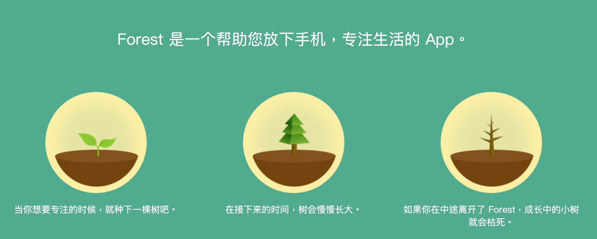

随着电子产品的普及和各类软件的急速发展，网络生活越来越有趣多样、让人沉迷，在这样的环境下，保持专注变成了一件越来越难的事情，越来越多人无法控制地在电子产品上消磨时间，他们非常需要保持专注、提升时间利用率。不少时间管理软件应运而生，受到了广大年轻人的青睐。“Forest专注森林”就是其中的一员。
Forest是一款时间效率软件，帮助解决年轻人难以保持专注、效率低的问题，Forest不仅能有效地帮助用户保持专注，它独有的种树模式也会给用户带来成就感和有趣的体验。使用Forest时，用户要先设定好专注时间，保持专注成功才会得到金币奖励，否则树会枯萎；用户可以通过得到的金币在现实中种下一棵树或购买其他树种和背景音。

Forest的口号是“培养专注高效率的生活习惯”，它的目标用户正是需要提升效率、远离手机的学生和年轻职场人——这些人通常也是较为依赖互联网的群体。Forest的主打功能是专注种树功能，后来还增加了多人一起种模式，但功能还是较为单一，操作相对简单；以用户付费下载、购买道具等为主要盈利方式。
就种树机制而言，它的好处是显而易见的：
1.给用户带来更多的成就感，相比冷冰冰的数字，树苗更具象化，更生动可爱；
2.能快速引起新用户的兴趣，维持老用户的黏性；
3.专注过程伴随种树，专注时间不同，得到的树的生长形态也不同，非常有趣；中断专注导致小树枯死的设定让放弃专注的后果具象化了，能激励用户保持专注。